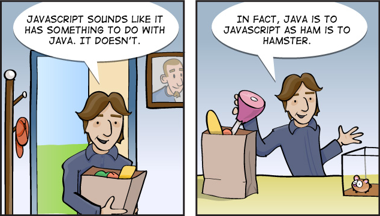
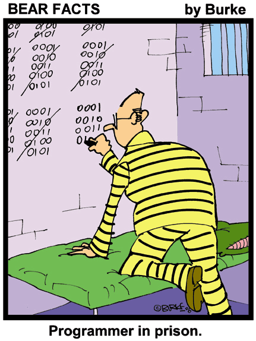

<!DOCTYPE html>
<html lang="no">
<head>
    <meta charset="UTF-8">
    <meta name="author" content="Silje Stadheim">
    <meta name="viewport" content="width=device-width, initial-scale=1">
    <title>Se på bildene</title>
    <script>
        window.onload = oppstart;
        var klikk = 5;                                                                 //starter variabelen klikk på 5

        function oppstart() {
            document.getElementById("bilde1").onclick = bytt1;
            document.getElementById("bilde2").onclick = bytt1;
        }


        function bytt1() {
            klikk = klikk - 1;                                                         //minker variabelen klikk med 1, slik at man får 1 mindre forsøk for hver gang funkjonen kjører

            if (klikk === 0) {                                                         //hvis man har kjørt funkjsonene 5 ganger, har man brukt opp alle klikkene. Variabelen klikke har blitt 0 og denne funksjonen gjør at bildene blir borte
                document.getElementById("bilde1").style.visibility = "hidden";         //settes kun her fordi det er denne funksjonen som kjører når klikk blir 0, kunne satt i begge for å være sikker, som jeg ville gjort i en lengre kode, men her ser man det så blir overflød å sette samme teksten i bytt2
                document.getElementById("bilde2").style.visibility = "hidden";
            }

            document.getElementById("bilde1").innerHTML = "";    //bildene byttes fra ordinær posisjon
            document.getElementById("bilde2").innerHTML = "";

            document.getElementById("bilde1").onclick = bytt2;                         //går til funksjonen bytt2
            document.getElementById("bilde2").onclick = bytt2;
        }

        function bytt2() {
            klikk = klikk - 1;                                                         //variabelen må også minke når denne funksjonen kjører (hvis ikke får man 10 klikk...)

            document.getElementById("bilde1").innerHTML = "";    //bildene byttes igjen, nå tilbake i ordnivær posisjon
            document.getElementById("bilde2").innerHTML = "";

            document.getElementById("bilde1").onclick = bytt1;                         //klikk igjen og bytt1-funksjonen starter igjen (og den bytter om bildene på nytt)
            document.getElementById("bilde2").onclick = bytt1;
        }

    </script>
    <style>

    </style>
</head>
<body>

<div id="bilde1"></div>
<div id="bilde2"></div>

</body>
</html>